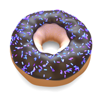

对甜甜圈巧克力糖粉进行颜色校正
在本教程中，我们将使用多功能的*工具*着色器为甜甜圈上的巧克力糖粉生成随机颜色。然后，我们将使用各种颜色着色器来进一步调整巧克力糖粉的颜色。
要下载简化的场景文件，请单击此处。
标准曲面
- 首先，创建一个 standard_surface 着色器，然后将着色器重命名为“Sprinkles”。将其指定给巧克力糖粉几何体。
工具着色器 - 颜色模式
- 创建一个工具*着色器，并将其连接到 *standard_surface 着色器的 base_color 参数。我们将使用工具着色器的对象模式将随机颜色添加到巧克力糖粉。此模式使用形状的名称计算颜色。
- 我们不需要工具着色器的任何着色，因为我们已经在使用 *standard_surface，因此，将 *shade_mode 更改为“平面”(Flat)。在“平面”(Flat)模式下，模型将渲染为水平照射的单一纯色着色。
Utility -> standard_surface.base_color
随机 - 种子
我们可以使用随机着色器为我们的巧克力糖粉创建各种颜色。
创建一个随机*着色器，并将其连接到 *standard_surface 着色器的 base_color。将工具着色器连接到随机着色器的 input_color。
更改 seed 参数数值。您应该会注意到巧克力糖粉的颜色会随机变化。

随机的种子参数动画演示（工具着色器设置为“对象”(Object)模式）
合成
我们还可以使用_合成_着色器在混合模式下混合其他颜色。
- 删除随机着色器，并创建一个合成*着色器。将其连接到 *standard_surface 着色器的 diffuse_color 参数。将工具着色器连接到合成着色器的输入 A。
- 将合成*着色器的 *operation 参数更改为“相乘”(multiply)，并将输入 B 的颜色更改为橙色。您应该会看到巧克力糖粉的颜色现在染色为橙色。
巧克力糖粉颜色使用合成着色器的“相乘”(multiply)运算染色为橙色
将 B 颜色更改为橙色并将运算更改为“相乘”
颜色转化
另一种更改巧克力糖粉颜色的方法是使用 color_convert 着色器。
- 删除合成*着色器，并创建一个 *color_convert 着色器。将其连接到 standard_surface 着色器的 diffuse_color 参数。将工具着色器连接到合成*着色器的 *input 参数。
- 尝试更改颜色空间以查看其对巧克力糖粉颜色的影响。在本例中，它已更改为 xyY。
颜色空间转化为 xyY
颜色校正
对巧克力糖粉的总体颜色感到满意后，便可使用 color_correct 着色器进一步微调其外观。
- 创建一个 color_correct 着色器，并将其连接到 standard_surface 着色器的 diffuse_color 参数。将工具*着色器连接到 *color_correct 着色器的 input 参数。您可以调整“曝光”(Exposure)和“相乘”(Multiply)参数，以添加更多不同的颜色值。

使用 color_correct 着色器微调颜色
本教程到此结束。可尝试使用其他一些颜色校正着色器来创建一些不同的颜色变化。